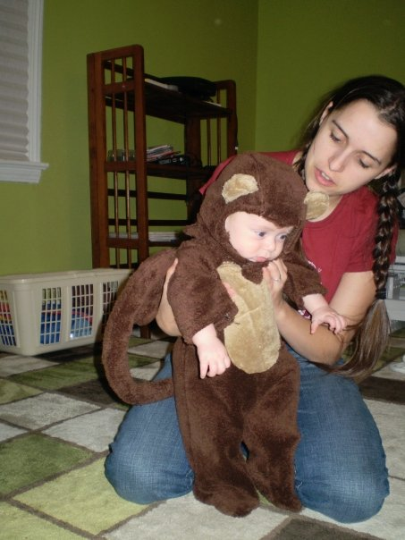

About Me
 Melinda Russell is a new up and coming Full Stack Web Developer with diverse and intriguing work experiences. She has spent the past five years enriching yound minds in the most poverty sticken areas of Cleveland as a full-time elementary school teacher. Before the life-changing experience of becoming a mother, she vetured all over the globe as a Classical Archaeologist digging in such places as Orvieto, Italy and Appolonia in Albania. Now Melinda prefers the quiet life with her son and 5 cats where she reflects on her adventures while baking and watching Doctor Who. She is also a very talented party planner, clothes designer, and cake decorator who is not afraid to renovate her kitchen with her own two hands.
Melinda started her academic career at the Univerity of Cincinnati earning a dual degree in Art History and Classics from the College of DAAP and McMicken respectfully. She earned the Semple Scholarship for students of Classical languages, and it was with the University of Cincinnati that she was able to travel to Albania as the dig's photographer. This was unprecented for an undergraduate at the time. Upon return from Albania she moved to France during a gap year before graduate school where she found out that she was going to become a mother. Upon reflection and research, Melinda found that archaeology no longer supported her priorities and goals. As a single full-time mom, Melinda returned to academia as a graduate student in Early Childhood Education at Cleveland State University. She completed all the requirements for her Ohio State teaching license and continued to earn her endorsement in reading and almost all of her coursework to finish her Master's degree. She has recently started the certificate program in coding from Case Western Reserve University and is excelling in all her endeavors.